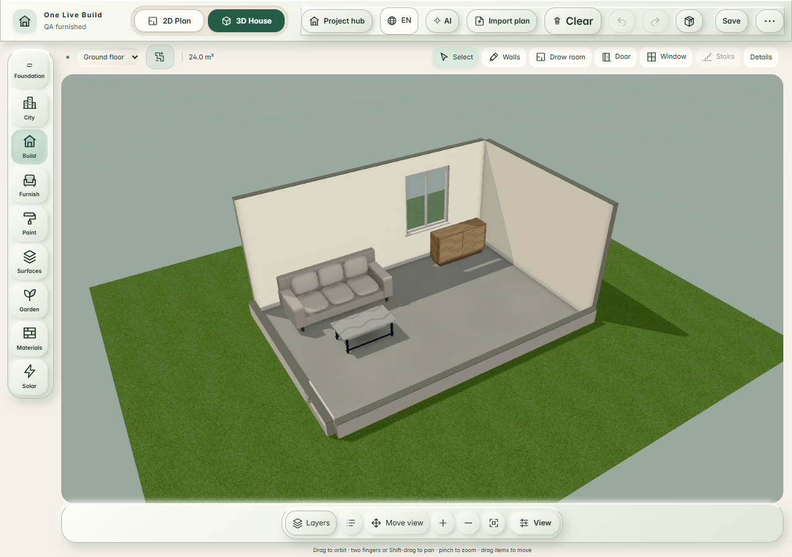
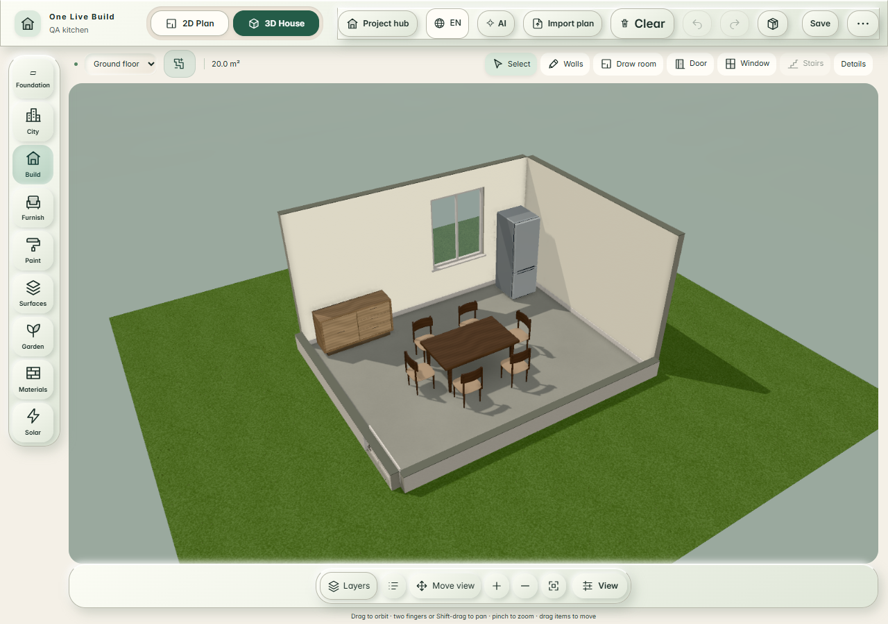
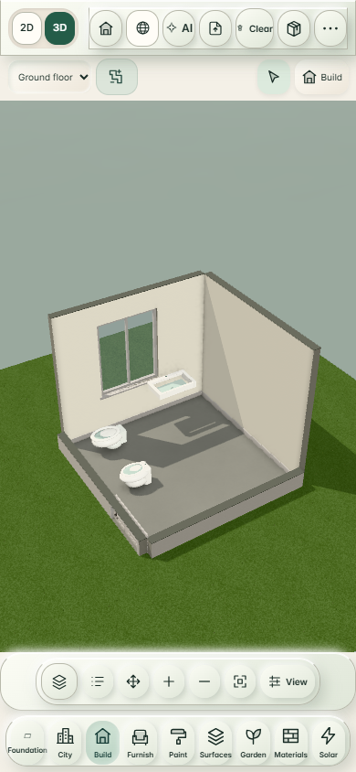

before · fixed graphics bookmarks
Cold browser contexts, network cache disabled. First paint is first existing ThreeStage data-shading mutation after render. FPS counts those mutations while continuous real pointer orbit is active, including event dispatch overhead. This is observed app rendering throughput, not idle RAF or certified physical-device performance. Software-rendered measurements do not establish the physical 60/30 FPS targets.
furnished-room
6 × 4 m; Comfy 2.30 × 0.94 × 0.94 m; Perera 1.20 × 0.60 × 0.43 m
desktop · 34.1 rendered FPS
First render: 3122 ms · CPU ×1
ANGLE (Intel, Intel(R) Iris(R) Xe Graphics (0x0000A7A1) Direct3D11 vs_5_0 ps_5_0, D3D11)

phone · 46.5 rendered FPS
First render: 2268 ms · CPU ×4
ANGLE (Intel, Intel(R) Iris(R) Xe Graphics (0x0000A7A1) Direct3D11 vs_5_0 ps_5_0, D3D11)

kitchen-dining
5 × 4 m; Gessica chairs-included planning footprint 2.40 × 1.80 × 0.74 m; fridge 0.60 × 0.67 × 1.78 m
desktop · 34.8 rendered FPS
First render: 1484 ms · CPU ×1
ANGLE (Intel, Intel(R) Iris(R) Xe Graphics (0x0000A7A1) Direct3D11 vs_5_0 ps_5_0, D3D11)

phone · 35.6 rendered FPS
First render: 6957 ms · CPU ×4
ANGLE (Intel, Intel(R) Iris(R) Xe Graphics (0x0000A7A1) Direct3D11 vs_5_0 ps_5_0, D3D11)

bathroom
3 × 3 m; bowl 0.650 × 0.395 × 0.400 m; basin 0.800 × 0.480 × 0.170 m; bidet 0.560 × 0.360 × 0.385 m
desktop · 36.4 rendered FPS
First render: 653 ms · CPU ×1
ANGLE (Intel, Intel(R) Iris(R) Xe Graphics (0x0000A7A1) Direct3D11 vs_5_0 ps_5_0, D3D11)

phone · 34.1 rendered FPS
First render: 2682 ms · CPU ×4
ANGLE (Intel, Intel(R) Iris(R) Xe Graphics (0x0000A7A1) Direct3D11 vs_5_0 ps_5_0, D3D11)

outside
4 × 3 m room on 9 × 7 m site; Seville sofa 1.140 × 0.670 × 0.870 m; Resiglas tank 1.320 × 1.320 × 1.055 m
desktop · 32.3 rendered FPS
First render: 1655 ms · CPU ×1
ANGLE (Intel, Intel(R) Iris(R) Xe Graphics (0x0000A7A1) Direct3D11 vs_5_0 ps_5_0, D3D11)

phone · 31.4 rendered FPS
First render: 3587 ms · CPU ×4
ANGLE (Intel, Intel(R) Iris(R) Xe Graphics (0x0000A7A1) Direct3D11 vs_5_0 ps_5_0, D3D11)